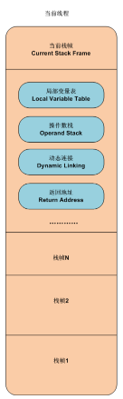
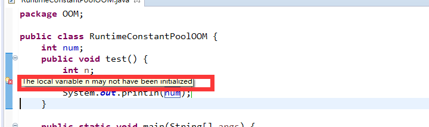
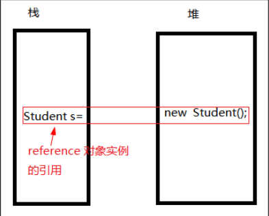
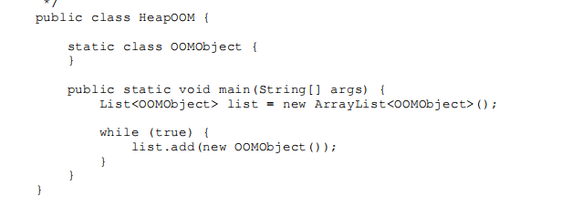
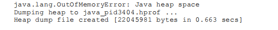
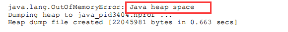
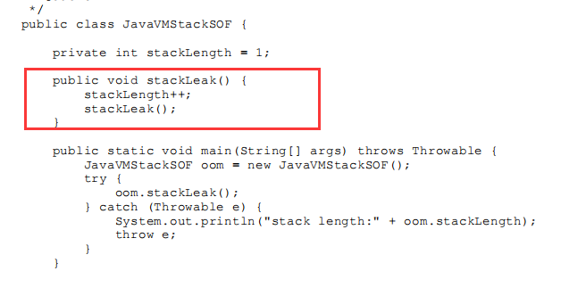
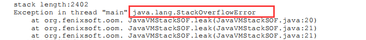
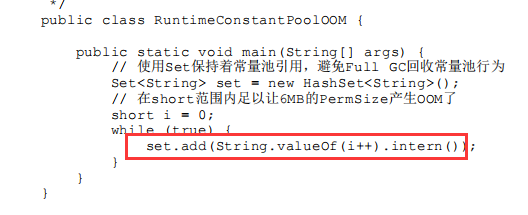

《深入理解Java虚拟机》学习笔记（一）
Java内存区域 与 Java内存溢出异常
1. JAVA内存区域
JVM在执行Java程序时，会将内存划分为若干个不同的数据区域。根据《Java虚拟机规范》的规定，Java虚拟机所管理的内存 将会包括五个运行时数据区域：程序计数器、方法区、本地方法栈、虚拟机栈 和 堆区 。 其中堆区 和 方法区是所有线程共享的数据区；虚拟机栈、程序计数器 和 本地方法栈为线程隔离的数据区。

程序计数器：
程序计数器（Program Counter Register）是一块较小的内存空间，它可以看作是当前线程所执行的字节码的行号指示器。它是程序控制流的指示器，分支、循环、跳转、异常处理、线程恢复等基础功能都需要依赖这个计数器来完成。每条线程都需要有一个独立的程序计数器，各条线程 之间计数器互不影响，独立存储，我们称这类内存区域为“线程私有”的内存。 此内存区域是唯 一一个在《Java虚拟机规范》中没有规定任何OutOfMemoryError情况的区域。
虚拟机栈
Java虚拟机栈（Java Virtual Machine Stack）也是线程私有的，它的生命周期与线程相同。 线程中每个方法被执行的时候，Java虚拟机都会同步创建一个栈帧（Stack Frame）用于存储局部变量表、操作数栈、动态连接、方法出口（地址）等信息。
每一个线程执行时通常会涉及到多个不同的方法的执行，每个方法执行时都会在JVM栈中同步创建该方法对应的栈帧，每个栈帧最基本都包含以上所说的四部分（如下图）：

局部变量表 Java局部变量表是栈帧重要组中部分之一。他主要保存函数的参数以及局部变量信息。局部变量表中的变量作用域是当前调用的函数。函数调用结束后，随着函数栈帧的销毁。局部变量表也会随之销毁，释放空间。
局部变量表存放了编译期可知（即大小已知）的各种Java虚拟机基本数据类型（局部变量）（boolean、byte、char、short、int、 float、long、double）、对象引用（reference类型指针）（reference类型，它并不等同于对象本身，可能是一个指向对象起始地址的引用指针，也可能是指向一个代表对象的句柄或者其他与此对象相关的位置）和returnAddress 类型（指向了一条字节码指令的地址）。
这里顺便说一下reference类型指针：引用类型，比如String s = new String("william")，会把其对象存储在堆，而把这个对象的引用（指针：s）存储在栈。

局部变量表所需的内存空间在编译期间完成分配，当进入一个方法时，这个方法需要在栈帧中分配多大的局部变量空间是完全确定的，在方法运行期间不会改变局部变量表的大小。这些数据类型在局部变量表中的存储空间以局部变量槽（Slot）来表示。
局部变量表是通过索引定位的方法查找相应的局部变量，索引的范围是从0~局部变量表最大容量（与之后的操作数栈不同，操作数栈就是通过出/入栈来操作局部变量的）。如果Slot是32位的，则遇到一个64位数据类型的变量(如long或double型)，则会连续使用两个连续的Slot来存储。
另外注意：JVM不会为局部变量赋初值。（下图中n为test方法中的局部变量，编译器会报错） 
操作数栈 操作数栈主要是用来存放当前方法执行处所需操作的数据信息。（需要注意其功能并非类似于计数器指导程序执行下一条指令，而是以后入先出栈(LIFO)的结构存放操作数据的）。实质就是栈帧中存储当前操作数据的一个后入先出栈，只不过该栈的栈深度是编译期已知大小的。
例如，程序需要计算a=1+2。操作数1和2 会分别入操作数栈，执行到这条语句时会先后出栈，将数据提供给CPU进行计算。
同局部变量表一样，操作数栈的最大深度也在编译的时候写入到方法的Code属性的max_stacks数据项中。（即编译期大小已知）
当一个方法刚刚开始执行时，其操作数栈是空的，随着方法执行和字节码指令的执行，会从局部变量表或对象实例的字段中复制常量或变量写入到操作数栈，再随着计算的进行将栈中元素出栈到局部变量表或者返回给方法调用者，也就是出栈/入栈操作。
动态链接 每个栈帧都包含一个指向运行时常量池(方法区一部分)中该栈帧所属方法的引用,持有这个引用是为了支持方法调用过程中的动态连接（Dynamic Linking）。在类加载阶段中的解析阶段会将符号引用转为直接引用，这种转化也称为静态解析。另外的一部分将在每一次运行时期转化为直接引用。这部分称为动态连接。
方法出口 当一个方法开始执行后，只有2种方式可以退出这个方法 ：
方法返回指令 ： 执行引擎遇到一个方法返回的字节码指令，这时候有可能会有返回值传递给上层的方法调用者，这种退出方式称为正常完成出口。
异常退出 ： 在方法执行过程中遇到了异常，并且没有处理这个异常，就会导致方法退出。
无论采用任何退出方式，在方法退出之后，都需要返回到方法被调用的位置，程序才能继续执行，方法返回时可能需要在栈帧中保存一些信息。一般来说，方法正常退出时，调用者的PC计数器的值可以作为返回地址，栈帧中会保存这个计数器值。而方法异常退出时，返回地址是要通过异常处理器表来确定的，栈帧中一般不会保存这部分信息。
所以，大致来说，栈帧中方法出口这一部分存储的就是该方法退出后的返回地址。
本地方法栈
本地方法栈（Native Method Stacks）与虚拟机栈所发挥的作用是非常相似的，其区别只是虚拟机 栈为虚拟机执行Java方法（也就是字节码）服务，而本地方法栈则是为虚拟机使用到的本地（Native） 方法服务。
简单说一下Native方法：
一个Native Method就是一个java调用非java代码的接口。该方法的实现由非java语言实现，比如C。这个特征并非java所特有，很多其它的编程语言都有这一机制，比如在C＋＋中，你可以用extern "C"告知C＋＋编译器去调用一个C的函数。 "A native method is a Java method whose implementation is provided by non-java code." 在定义一个native method时，并不提供实现体（有些像定义一个java interface），因为其实现体是由非java语言在外面实现的。
Java使用起来非常方便，然而有些层次的任务用java实现起来不容易，或者我们对程序的效率很在意时，问题就来了。有时Java应用需要与java外面的环境交互，这是本地方法存在的主要原因。本地方法正是这样一种交流机制：它为我们提供了一个非常简洁的接口，而且我们无需去了解java应用之外的繁琐的细节。
堆区
Java堆（Java Heap）是虚拟机所管理的内存中最大的一块。Java堆是被所 有线程共享的一块内存区域，在虚拟机启动时创建。此内存区域的唯一目的就是存放对象实例，Java 世界里“几乎”所有的对象实例都在这里分配内存。 Java堆是垃圾收集器管理的内存区域（GC堆）。 Java堆中存储的都只能是对象的实例，不存放基本类型和对象引用（栈区），只存放对象本身 。
堆不同于栈的好处是：编译器（编译期间）不需要知道要从堆里分配多少存储区域，也不必知道存储的数据在堆里存活多长时间。因此，在堆里分配存储有很大的灵活性。（通俗来讲就是，如要实例化一个对象，定义该对象的类中所包含的基本类型，比如int，double等数据，甚至于一个引用reference指针本身也是大小已知的，在编译期就已经知道其所需内存的大小，其实这也就是栈区中的局部变量表，所以说其是大小固定的，而实例化出的对象本身（的信息），是存于堆中的。）
方法区
方法区（Method Area）与Java堆一样，是线程共享的内存区域，它用于存储已被虚拟机加载 的类型信息（即类的信息）、常量、静态变量（static）、即时编译器编译后的代码缓存等数据。
简单来说，方法区中存储的主要是类的信息（需要同堆区存放的信息区分开，堆区存的是类实例化出的对象本身的信息，而方法区存储的是类（class文件）的信息）。
Class文件又称字节码文件，一种二进制文件，它是由某种语言经过编译而来，注意这里并不一定是Java语言，还有可能是Clojure、Groovy、JRuby、Jython、Scala等，Class文件运行在Java虚拟机上。Java虚拟机不与任何一种语言绑定，它只与Class文件这种特定的二进制文件格式所关联。class文件主要描述的就是类的信息，每一个类都会有一个特定的class文件与之相对应，方法区中主要存储的就是这些信息。
方法区中最重要的一部分就是运行时常量区。
运行时常量池（Runtime Constant Pool）是方法区的一部分。Class文件中除了有类的版本、字 段、方法、接口等描述信息外，还有一项信息是常量池表（Constant Pool Table），用于存放编译期生成的各种字面量与符号引用，这部分内容将在类加载后存放到方法区的运行时常量池中。
这里也要明确class文件中的常量池表与方法区中运行时常量区的区别：每一个类都会有一个对应的class文件描述类的信息，class文件中有一部分即为“常量池表”，用来描述该类中的常量信息。在编译过程中所有被编译的类class文件的常量池表里面的常量统一全部被存在方法区中的“运行时常量区”中。但是也不能简单地描述为“运行时常量池”是所有class文件“常量池”的总和。因为运行时常量池相对于Class文件常量池的另外一个重要特征是具备动态性，Java语言并不要求常量一定只有编译期才能产生，也就是说，并非预置入Class文件中常量池的内容才能进入方法区运行时常量池，运行期间也可以将新的常量放入池中。
2.Java内存溢出异常
在《Java虚拟机规范》的规定里，除了程序计数器外，虚拟机内存的其他几个运行时区域都有发 生OutOfMemoryError（OOM）异常的可能。
堆溢出
Java堆用于储存对象实例，不断地实例化对象，并且保证GC Roots到对象之间有可达路径（有引用关系）来避免垃圾回收机制清除这些对象，那么随着对象数量的增加，总容量触及最大堆的容量限制后就会 产生内存溢出异常。例如下图不断地创建OOMObject对象，最终将会导致内存溢出异常。

Java堆内存的OutOfMemoryError异常是实际应用中最常见的内存溢出异常情况。出现Java堆内存溢出时，异常堆栈信息“java.lang.OutOfMemoryError”会跟随进一步提示“Java heap space”。

要解决这个内存区域的异常，第一步首先应判断内存中导致OOM的对象是否是必要的，也就是要先分清楚到底是出现了内存泄漏（Memory Leak）还是内存溢出（MemoryOverflow）。
内存泄漏：可进一步通过工具查看泄漏对象到GC Roots的引用链，找到泄漏对象是通过怎样的引用路径、与哪些GC Roots相关联，才导致垃圾收集器无法回收它们，根据泄漏对象的类型信息以及它到GC Roots引用链的信息，一般可以比较准确地定位到这些对象创建的位置，进而找出产生内存泄漏的代码的具体位置。
内存溢出：如果不是内存泄漏，换句话说就是内存中的对象确实都是必须存活的，那就应当检查Java虚拟机
的堆参数设置，看看是否还有向上调整的空间。再从代码上检查 是否存在某些对象生命周期过长、持有状态时间过长、存储结构设计不合理等情况，尽量减少程序运行期的内存消耗。
Java虚拟机栈和本地方法栈溢出
关于虚拟机栈和本地方法栈，在《Java虚拟机规范》中描述了两种异常：
- 如果线程请求的栈深度大于虚拟机所允许的最大深度（即无法容纳新的栈帧时），将抛出StackOverflowError异常。
- 如果虚拟机的栈内存允许动态扩展，当扩展栈容量无法申请到足够的内存时（首先需要能动态扩展栈容量，并且扩展到无法扩展时），将抛出OutOfMemoryError异常。
《Java虚拟机规范》明确允许Java虚拟机实现自行选择是否支持栈的动态扩展，而HotSpot虚拟机的选择是不支持扩展，所以除非在创建线程申请内存时就因无法获得足够内存而出现 OutOfMemoryError异常，否则在线程运行时是不会因为扩展而导致内存溢出的，只会因为栈容量无法容纳新的栈帧而导致StackOverflowError异常。（这里我的理解是：StackOverflow是由于方法调用过多，导致栈没有足够空间为新调用的方法建立栈帧，并且栈又不能动态扩展自己的空间，所以抛出了“栈溢出”；而OutOfMemory是由于栈申请内存空间时，内存没有足够空间同意这次申请，所以抛出“内存溢出”。）
StackOverflowError：一般来说是程序逻辑错误导致的，比如写了一个死递归，就有可能造成此种情况。（个人觉得，栈区通常报错StackOverflowError会更多一些）以下程序为一个死递归程序。


Java方法区和运行时常量池溢出 方法区的主要职责是用于存放类的相关信息，如类名、访问修饰符、常量池、字段描述、方法描述等。方法区溢出通常的原因是运行时产生大量的类填满了方法区，导致溢出。比如代码中会使用某些API动态产生类（如反射时的 GeneratedConstructorAccessor和动态代理等）。
方法区溢出也是一种常见的内存溢出异常，一个类如果要被垃圾收集器回收，要达成的条件是比较苛刻的。在经常运行时生成大量动态类的应用场景里，就应该特别关注这些类的回收状况。
运行时常量池溢出这里对于JDK6之前和之后的版本有较大区别：在JDK 6或更早之前的HotSpot虚拟机中，常量池都是分配 在永久代（方法区）中，而HotSpot从JDK 7开始逐步“去永久代”的计划，并在JDK 8中完全使用元空间来代替永久代（即运行时常量池移入堆区）。
（JDK6及以前）要导致运行时常量池溢出，只需要向常量池中存入大量新字符串即可。（String::intern()是一个本地方法，它的作用是如果字符串常量池中已经包含一个等于此String对象的字符串，则返回代表池中这个字符串的String对象的引用；否则，会将此String对象包含的字符串添加到常量池中，并且返回此String对象的引用。）


从运行结果中可以看到，运行时常量池溢出时，在OutOfMemoryError异常后面跟随的提示信息是“PermGen space”，说明运行时常量池的确是属于方法区（即JDK 6的HotSpot虚拟机中的永久代）的 一部分。（JDK6及以前版本）
而使用JDK 7或更高版本的JDK来运行这段程序并不会得到相同的结果，都不会重现JDK 6中的溢出异常，循环将一直进行下去，永不停歇。出现这种变 化，是因为自JDK 7起，原本存放在永久代的字符串常量池被移至Java堆之中（GC时会清理常量池）。